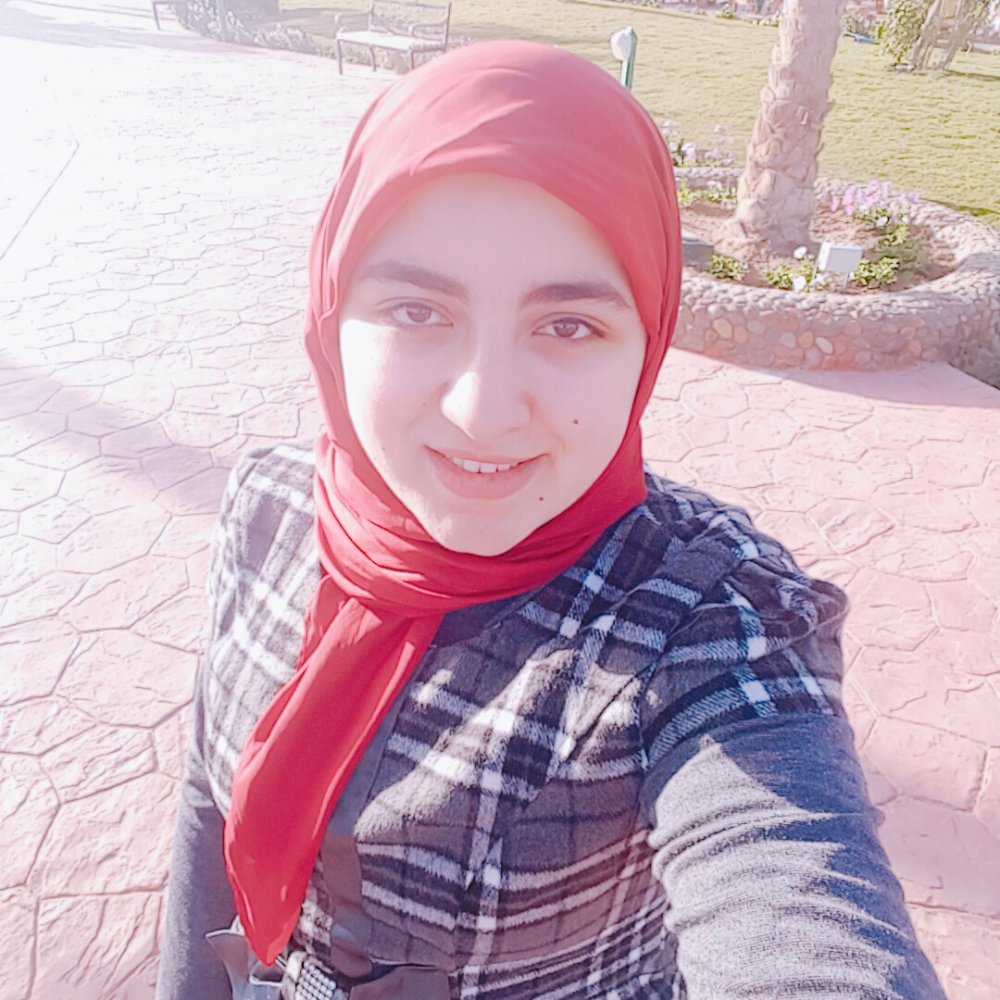

Personal Information
Yasmin Ayman Alzainy
Yasmin.Alzainy@gmail.com
Experience & Volunteering
Java Applications Development Trainee
Center text">
ITI - Ministry of Communication & Information Technology
Computer & English Trainer Volunteer
AIESEC Turkey| Train middle & high-school Turkish students at Elçin-schools in Izmir
Summer Intern
Microsoft Egypt| Microsoft Developer Experience & Evangelism (DX) department
Head of Public Relations Volunteer
IEEE Mansoura Student Branch| I was PR volunteer till NOV 2016 and Head of PR till DEC 2017
Technical Skills
-
C# and Java
- Azure
- Firebase
- UWP
- Android Development
- VD Editing
Back to Welcome page ^_^